청소년상담사-1급(2교시)(구) (2015-03-28 기출문제)
1과목: 비행상담
1. 청소년 지위비행에 해당하는 것은?
- 음주
- 금품갈취
- 도벽
- 인터넷 중독
- 신체폭력
(정답률: 알수없음)

2. 소년법상 소년부의 보호사건으로 심리하는 소년을 모두 고른 것은?
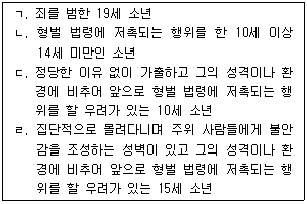
- ㄱ, ㄹ
- ㄴ, ㄷ
- ㄱ, ㄴ, ㄷ
- ㄴ, ㄷ, ㄹ
- ㄱ, ㄴ, ㄷ, ㄹ
(정답률: 알수없음)
3. 학교폭력예방 및 대책에 관한 법률에서 명시된 다음의 행위는?
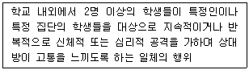
- 상해
- 따돌림
- 모욕
- 강요
- 폭행
(정답률: 알수없음)
4. 청소년 비행화 과정에 관한 설명으로 옳지 않은 것은?
- 갈등과 긴장이 계속되는 가족 관계는 비행가능 가족환경을 조성한다.
- 사소한 일탈행동을 훈육하지 않으면 비행억제력이 상실된다.
- 노는 아이들과 친해지면서 비행 세계를 경험하게 된다.
- 반복적인 비행행동은 범죄행동으로 발전한다.
- 비행행동을 엄격히 단속하면 비행행동이 강화된다.
(정답률: 알수없음)
5. 와이너(I. Weiner)가 분류한 사회적 비행에 관한 설명으로 옳지 않은 것은?
- 반사회적 행동 기준을 부과하는 하위문화의 구성원으로서 비행을 저지른다.
- 사회적 비행청소년은 대인관계에서 정상적으로 기능한다.
- 사회적 비행은 사회경제적 지위가 낮은 계층의 산물이다.
- 사회적으로 합의된 목표와 수단에 의해서 자신의 자존감과 소속감을 획득할 수 없는 경우에 비행하위 집단을 형성한다.
- 사회적 비행은 행위자의 입장에서 보면 적응적인 행동이다.
(정답률: 알수없음)
6. 올베우스 프로그램(Olweus program)에서 추천하는 집단 괴롭힘에 대처하는 4대 규칙이 아닌 것은?
- 우리는 다른 친구를 괴롭히지 않을 것이다.
- 우리는 괴롭힘을 당하는 친구들을 도울 것이다.
- 우리는 혼자 있는 친구들과 함께 할 것이다.
- 만약 누군가가 괴롭힘을 당하게 된다는 것을 알면, 우리는 학교나 집의 어른들에게 이야기 할 것이다.
- 우리는 또래조정 절차를 신청할 것이다.
(정답률: 알수없음)
7. 비행청소년을 위한 집단상담에서 다음의 상담자 반응은?
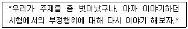
- 재초점화하기
- 재진술하기
- 공감하기
- 해석하기
- 반영하기
(정답률: 알수없음)
8. 사회로부터 법을 어기지 않도록 통제받기 때문에 일탈행동을 하지 않는다고 보는 이론은?
- 긴장이론
- 아노미이론
- 사회유대이론
- 사회인지이론
- 차별접촉이론
(정답률: 알수없음)
9. 학교폭력의 이론적 관점에 관한 설명으로 옳지 않은 것은?
- 생태학적 관점 : 학교폭력은 개인, 가정, 학교, 사회 등 보다 넓은 사회적 맥락에서 관련 요인들이 상호작용한 결과이다.
- 모멸극복적 관점 : 부모가 갖는 기대와 자기능력과의 격차 때문에 겪는 압력과 긴장이 반사회적 행동을 야기한다.
- 정신분석학적 관점 : 자아나 초자아의 통제가 결핍되면 비합리적 폭력이 표출된다.
- 학습이론적 관점 : 친밀한 집단 내의 사람들 간의 상호작용을 통해 폭행의 허용적 가치와 태도를 학습한다.
- 생물학적 관점 : 폭력성향을 통제해야하는 뇌신경체제의 장애는 학교폭력과 같은 공격행위를 유발한다.
(정답률: 알수없음)
10. 아동ㆍ청소년 대상 성범죄의 처벌에 관한 설명으로 옳지 않은 것은?
- 아동ㆍ청소년 대상 성범죄의 공소시효는 해당 성범죄로 피해를 당한 아동ㆍ청소년이 성년에 달한 날부터 진행한다.
- 아동ㆍ청소년이용 음란물을 제작ㆍ수입 또는 수출한 자는 무기징역 또는 5년 이상의 유기징역에 처한다.
- 19세 이상의 사람이 장애 아동ㆍ청소년을 추행한 경우에는 10년 이하의 징역 또는 1천500만원 이하의 벌금에 처한다.
- 아동ㆍ청소년의 성을 사는 행위의 장소를 제공하는 행위를 업으로 하는 자는 7년 이하의 징역 또는 5천만원 이하의 벌금에 처한다.
- 폭행이나 협박으로 아동ㆍ청소년 대상 성범죄의 피해자 또는 보호자를 상대로 합의를 강요한 자는 7년 이하의 유기징역에 처한다.
(정답률: 알수없음)
11. ( )에 알맞은 것은?
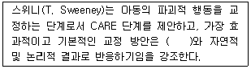
- 칭찬하기
- 격려하기
- 처벌하기
- 훈육하기
- 수용하기
(정답률: 알수없음)
12. 한나, 한나와 키즈(F. Hanna, C. Hanna, & S. Keys)는 비행청소년들과 관계를 촉진하는 상담전략을 다가가기, 수용하기, 관계맺기 단계로 구분한다. 다가가기 단계에서의 전략을 모두 고른 것은?
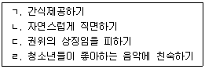
- ㄱ, ㄴ
- ㄴ, ㄷ
- ㄷ, ㄹ
- ㄱ, ㄷ, ㄹ
- ㄴ, ㄷ, ㄹ
(정답률: 알수없음)
13. 다음의 청소년 가출 유형은?
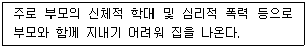
- 탐험형 가출
- 시위형 가출
- 추구형 가출
- 탈출형 가출
- 자아실현형 가출
(정답률: 알수없음)
14. 인터넷 중독 청소년 상담에서 고려할 사항을 모두 고른 것은?
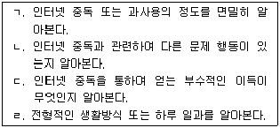
- ㄱ, ㄴ
- ㄴ, ㄷ
- ㄱ, ㄴ, ㄷ
- ㄴ, ㄷ, ㄹ
- ㄱ, ㄴ, ㄷ, ㄹ
(정답률: 알수없음)
15. 학교의 장이 학교폭력 가해학생의 출석을 정지 조치할 수 있는 경우를 모두 고른 것은?
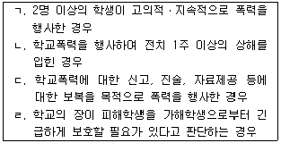
- ㄱ, ㄴ
- ㄷ, ㄹ
- ㄱ, ㄷ, ㄹ
- ㄴ, ㄷ, ㄹ
- ㄱ, ㄴ, ㄷ, ㄹ
(정답률: 알수없음)
16. 학교폭력예방 및 대책에 관한 법률에서 가해학생에 대한 조치로서 규정하고 있는 것을 모두 고른 것은?
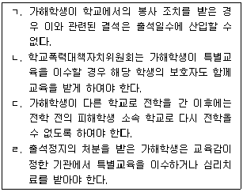
- ㄱ, ㄹ
- ㄴ, ㄷ
- ㄱ, ㄴ, ㄷ
- ㄴ, ㄷ, ㄹ
- ㄱ, ㄴ, ㄷ, ㄹ
(정답률: 알수없음)
17. 신체적ㆍ기능적 결함과 사회적 억압이 청소년에게 열등 콤플렉스를 일으키고 그것을 지나치게 보상하려는 시도로서 비행을 저지르게 된다고 주장한 학자는?
- 프로이트(S. Freud)
- 콜버그(L. Kohlberg)
- 반두라(A. Bandura)
- 아들러(A. Adler)
- 에릭슨(E. Erikson)
(정답률: 알수없음)
18. 청소년 비행의 유전적인 영향을 찾는 연구방법으로 옳게 묶인 것은?
- 범죄자가계 연구, 쌍생아 연구
- 쌍생아 연구, 지능과 비행 연구
- 입양아 연구, 정보처리능력과 비행 연구
- 지능과 비행 연구, 낙인효과 연구
- 역학 연구, 도덕발달과 비행 연구
(정답률: 알수없음)
19. 비행청소년의 심리 평가에 관한 설명으로 옳지 않은 것은?
- PAI 검사는 약물 문제를 측정하는 임상척도를 포함한다.
- MMPI 검사는 반사회성 성격을 측정하는 임상척도를 포함한다.
- TAT 검사는 외현화 문제를 측정하는 문제행동증후군 척도를 포함한다.
- K-CBCL 검사는 비행을 측정하는 문제행동증후군 척도를 포함한다.
- ABAS-S 검사는 지위비행을 측정하는 문제척도를 포함한다.
(정답률: 알수없음)
20. 주의력결핍 및 과잉행동장애 청소년을 선별하는 척도를 모두 고른 것은?
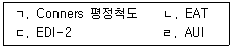
- ㄱ
- ㄱ, ㄴ
- ㄴ, ㄷ
- ㄷ, ㄹ
- ㄱ, ㄴ, ㄷ
(정답률: 알수없음)
21. 콜버그(L. Kohlberg)의 도덕발달 과정에서 행위의 결과가 가져오는 보상이나 처벌에 의해 옳고 그름을 판단하는 비행청소년이 속하는 단계는?
- 전조작기 단계
- 구체적 조작기 단계
- 전인습적 단계
- 인습적 단계
- 후인습적 단계
(정답률: 알수없음)
22. 학교폭력예방 및 대책에 관한 법률상 학교폭력 예방과 사후조치 등을 위하여 교육감이 수행할 수 있는 조사ㆍ상담에 관한 설명으로 옳지 않은 것은?
- 교육감은 학교폭력 피해학생 상담을 수행할 수 있다.
- 교육감은 가해학생 학부모 조사를 수행할 수 없다.
- 교육감은 학교폭력 예방 및 대책에 관한 계획의 이행 지도를 수행할 수 있다.
- 교육감은 관할 구역 학교폭력서클 단속을 수행할 수 있다.
- 교육감은 학교폭력 예방을 위하여 민간 기관 및 업소 출입ㆍ검사를 수행할 수 있다.
(정답률: 알수없음)
23. 청소년 비행에 영향을 미치는 개인적 위험요인이 아닌 것은?
- 높은 감각추구 성향
- 높은 권력욕구
- 높은 내적 통제 소재
- 낮은 자기 효능감
- 높은 충동성
(정답률: 알수없음)
24. 성격평가질문지(PAI)의 타당도 척도가 아닌 것은?
- 비일관적 반응 (ICN)
- 저빈도 (INF)
- 부정적 인상 (NIM)
- 긍정적 인상 (PIM)
- 무선반응 비일관성 (VRIN)
(정답률: 알수없음)
25. 해어(R. Hare)가 PCL 도구를 통해 선별하는 성격특성은?
- 히스테리성 성격
- 정신병질적 성격
- 강박성 성격
- 편집성 성격
- 사회적 내향성 성격
(정답률: 알수없음)
26. 비행청소년의 심리평가 도구 중 부모가 평정할 수 있는 것은?
- K-CBCL
- TAT
- SNSB
- K-WISC-IV
- MMPI-A
(정답률: 알수없음)
27. 청소년 비행의 원인이 되는 가정의 특징을 모두 고른 것은?
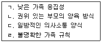
- ㄱ, ㄴ
- ㄴ, ㄷ
- ㄱ, ㄴ, ㄷ
- ㄱ, ㄷ, ㄹ
- ㄱ, ㄴ, ㄷ, ㄹ
(정답률: 알수없음)
28. DSM-5에서 품행장애의 진단기준이 아닌 것은?
- 사람과 동물에 대한 공격성
- 성인과의 논쟁
- 심각한 규칙 위반
- 사기 또는 도둑질
- 재산의 파괴
(정답률: 알수없음)
29. 학교폭력예방 및 대책에 관한 법률에서 피해학생의 보호에 관한 규정을 모두 고른 것은?
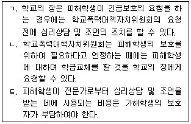
- ㄱ
- ㄴ
- ㄱ, ㄴ
- ㄴ, ㄷ
- ㄱ, ㄴ, ㄷ
(정답률: 알수없음)
30. 학교폭력예방 및 대책에 관한 법률에서 학교폭력 예방교육에 관한 규정으로 옳지 않은 것은?
- 학교의 장은 학생의 육체적ㆍ정신적 보호와 학교폭력의 예방을 위한 학생들에 대한 교육을 학기별로 1회 이상 실시하여야 한다.
- 학교의 장은 학교폭력 예방교육 프로그램의 구성 및 그 운용 등을 전담기구와 협의하여 전문단체 또는 전문가에게 위탁할 수 있다.
- 학교의 장은 학교폭력의 예방 및 대책 등을 위한 교직원 및 학부모에 대한 교육을 1년에 1회 이상 실시하여야 한다.
- 교육장은 학교폭력 예방교육 프로그램의 구성과 운용계획을 학부모가 쉽게 확인할 수 있도록 인터넷 홈페이지에 게시하여야 한다.
- 학교폭력의 예방을 위한 학생들에 대한 교육은 학교폭력의 개념ㆍ실태 및 대처방안 등을 포함하여야 한다.
(정답률: 알수없음)
2과목: 성상담
31. 성병과 증상에 관한 설명으로 옳은 것을 모두 고른 것은?
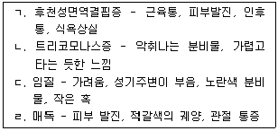
- ㄱ, ㄴ
- ㄴ, ㄷ
- ㄷ, ㄹ
- ㄱ, ㄴ, ㄹ
- ㄱ, ㄷ, ㄹ
(정답률: 알수없음)
32. 아동ㆍ청소년의 성보호에 관한 법률에서 아동ㆍ청소년의 성을 사는 행위를 한 자에 대한 처벌 내용으로 옳은 것은?
- 1년 이하의 징역 또는 1천만원 이하의 벌금
- 1년 이상 3년 이하의 징역 또는 2천만원 이하의 벌금
- 1년 이상 5년 이하의 징역 또는 2천만원 이하의 벌금
- 1년 이상 10년 이하의 징역 또는 2천만원 이상 5천만원 이하의 벌금
- 1년 이상 15년 이하의 징역 또는 2천만원 이상 5천만원 이하의 벌금
(정답률: 알수없음)
33. 피임 방법의 장점이 아닌 것은?
- 경구피임약은 사용이 간편하고 가임회복이 빠르다.
- 콘돔은 가격이 저렴하고 성매개 감염을 막아주며 의학적 부작용이 없다.
- 질외사정은 성매개 감염원을 예방하고 자연스러운 성적 표현이 가능하다.
- 살정제는 사용이 간편하며 성관계시에 윤활성을 제공한다.
- 다이아프램은 성매개 감염 질환과 골반 염증질환의 위험률을 낮춰준다.
(정답률: 알수없음)
34. 성정체성에 관한 설명으로 옳지 않은 것은?
- 성역할고정관념은 성과 관련해서 인간이 어떻게 행동할 것이라고 가정하고 기대하는 것이다.
- 성정체성장애는 자신의 해부학적 성과 성적 역할에 지속적인 불편감을 경험한다.
- 정신분석이론에서는 성정체성장애를 항문기에 고착된 현상으로 본다.
- 성역할은 자신이 남자 혹은 여자라는 내적인 느낌과 외적으로 나타나는 행동양식이다.
- 성전환증 환자의 정신치료는 주로 동반되는 우울증이나 불안감을 치료하는데 초점을 맞춘다.
(정답률: 알수없음)
35. 여성의 성기관에 관한 설명으로 옳지 않은 것은?
- 질은 약 10cm이며, 출산시 4~5배까지 확장될 수 있다.
- 자궁은 난자에 도달하기 위한 경로를 제공하고 월경을 유도한다.
- G-spot은 질의 앞부분 5~7cm 위쪽에 있고, 치골을 지난다.
- 난소는 난자를 생산하고, 성 호르몬을 분비하는 역할을 한다.
- 나팔관은 3~5cm 정도의 트럼펫 모양으로 자궁의 양쪽 끝부분으로부터 확장된 관이다.
(정답률: 알수없음)
36. 다음의 예를 설명하는 이론적 관점은?
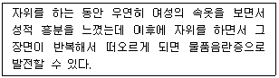
- 통합적 관점
- 학습이론적 관점
- 생물학적 관점
- 정신분석적 관점
- 사회학적 관점
(정답률: 알수없음)
37. 청소년 성상담자의 태도로 옳지 않은 것은?
- '왜' 로 시작하는 질문은 가급적 피한다.
- 청소년의 성행동의 의미와 이유를 이해하려고 한다.
- 폐쇄형 질문을 통해 구체적인 정보를 탐색한다.
- 성에 관한 다양한 정보를 탐색할 수 있는 기회를 제공한다.
- 성과 관련된 법과 정책 및 내담자의 문화적 특성을 이해하려고 노력한다.
(정답률: 알수없음)
38. 아동ㆍ청소년의 성보호에 관한 법률에 명시된 청소년상담복지센터의 업무를 모두 고른 것은?
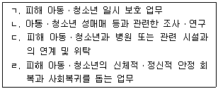
- ㄱ, ㄴ
- ㄴ, ㄷ
- ㄷ, ㄹ
- ㄱ, ㄴ, ㄷ
- ㄱ, ㄷ, ㄹ
(정답률: 알수없음)
39. 성역할의 발달에 관해 다음과 같이 주장한 학자는?
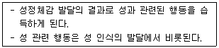
- 콜버그(L. Kohlberg)
- 브라운(D. Brown)
- 스턴버그(R. Sternberg)
- 프로이트(S. Freud)
- 머스타인(B. Murstein)
(정답률: 알수없음)
40. 다음과 같이 호소하는 청소년 내담자에 관한 상담자 반응으로 옳지 않은 것은?
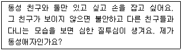
- 내담자가 생각하는 동성애자가 무엇인지 얘기해보면 좋을 것 같아요.
- 동성애자인지 정신과에 가서 정확한 진단을 받아보는 것이 좋을 것 같아요.
- 동성친구에게 우정 이상의 감정이 느껴지는 것이 당혹스럽고 걱정되겠군요.
- 청소년들은 사춘기에 '혹시 내가 동성애자가 아닌가' 하는 고민을 하기도 합니다.
- 자신의 성적 지향을 잘 알기 위해 자신에 대해서 충분히 관찰하는 것이 필요합니다.
(정답률: 알수없음)
41. 다음에서 설명하는 사회적 침투이론의 단계는?
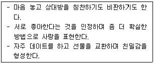
- 지향단계
- 상호의존단계
- 탐색적애정교환단계
- 애정교환단계
- 안정적 애정교환단계
(정답률: 알수없음)
42. 청소년 성교육을 진행하는 상담자의 자세로 옳지 않은 것은?
- 개개인의 성경험을 자세하게 이야기하도록 분위기를 유도한다.
- 청소년의 질문에 대해 비판단적 태도를 유지한다.
- 성에 대한 다양한 관점을 이해하고 존중해야 한다.
- 어떤 생각이라도 표현할 수 있도록 수용적인 분위기를 조성한다.
- 정확하고 객관적인 용어를 사용해야 한다.
(정답률: 알수없음)
43. 자위행위에 관한 설명으로 옳은 것을 모두 고른 것은?
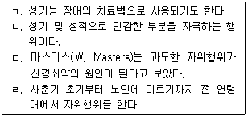
- ㄱ, ㄴ
- ㄴ, ㄷ
- ㄷ, ㄹ
- ㄱ, ㄴ, ㄹ
- ㄱ, ㄴ, ㄷ, ㄹ
(정답률: 알수없음)
44. 마스터스와 존슨(W. Masters, & V. Johnson)이 언급한 성반응 단계를 순서대로 나열한 것은?
- 흥분 - 안정 - 절정 - 전환
- 흥분 - 절정 - 전환 - 안정
- 안정 - 흥분 - 절정 - 전환
- 안정 - 흥분 - 전환 - 절정
- 흥분 - 전환 - 절정 - 안정
(정답률: 알수없음)
45. 성폭력 피해자가 도움을 받을 수 있는 긴급전화를 모두 고른 것은?
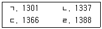
- ㄱ, ㄴ
- ㄴ, ㄷ
- ㄷ, ㄹ
- ㄱ, ㄷ, ㄹ
- ㄴ, ㄷ, ㄹ
(정답률: 알수없음)
46. 성역할에 관한 설명으로 옳지 않은 것은?
- 정신분석이론은 오이디푸스 콤플렉스를 통해 성역할을 학습한다고 보았다.
- 사회학습이론은 사회 내에서 남녀의 권력 차이의 결과로 성역할 차이가 발생한다고 보았다.
- 인지발달이론은 성역할 개념을 형성한 후 역할에 맞는 행동을 위해 적극적으로 행동한다고 보았다.
- 사회생물학적 관점은 성역할이 유전된다고 보았다.
- 문화인류학적 관점은 각 문화권에서 생존을 위해 적응한 역할로 보았다.
(정답률: 알수없음)
47. 임신을 피하기 위해 청소년이 사용한 방법 중 가장 안전한 것은?
- 성관계 후에 물로 질 내부를 세척하였다.
- 성관계를 가질 때 마다 콘돔을 사용하였다.
- 사정하기 직전에 체외에 사정하였다.
- 생리주기를 계산해 배란기에는 성관계를 피하였다.
- 점액분비가 시작될 때부터 가장 많이 분비된 후 3~4일간 성관계를 피하였다.
(정답률: 알수없음)
48. 다음의 현상을 설명하는 이론은?
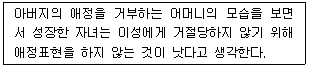
- 사회학습이론
- 인지발달이론
- 정보처리이론
- 정신분석이론
- 애착이론
(정답률: 알수없음)
49. 청소년기 성발달에 관한 설명으로 옳지 않은 것은?
- 여성은 유방 발육, 음모 발달, 신장 및 체중 증가, 초경의 순서로 발달한다.
- 사춘기의 시작이나 진행 속도는 개인차가 있다.
- 남성의 사춘기 시작점은 고환의 발달이다.
- 정상적 발달을 하고 있는 경우라도 사춘기의 생리적 변화의 내용에는 개인차가 있다.
- 사춘기 성적 발달은 성선 자극 호르몬의 분비에서 시작된다.
(정답률: 알수없음)
50. 성의 생물학적 특성에 관한 설명으로 옳지 않은 것은?
- 발기는 교감신경, 사정은 부교감신경의 흥분에 의해 반응한다.
- 남녀 모두 안드로겐, 에스트로겐을 갖고 있다.
- 프로게스테론은 여성의 임신을 준비시킨다.
- 에스트라디올은 난소에서 생성되며, 가임기간 중 가장 많이 생산된다.
- 출산시 자궁수축을 돕는 호르몬은 옥시토신이다.
(정답률: 알수없음)
51. 이상성행동에 해당하는 것을 모두 고른 것은?
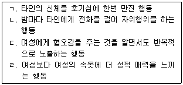
- ㄱ, ㄴ
- ㄱ, ㄹ
- ㄴ, ㄷ
- ㄴ, ㄷ, ㄹ
- ㄱ, ㄴ, ㄷ, ㄹ
(정답률: 알수없음)
52. 성의 역사에 관한 시기와 설명으로 옳지 않은 것은?
- 로마시대 - 자유로운 성의 표현 및 동성애 성행
- 빅토리아시대 - 보수적인 성적 태도를 강조
- 18세기 - 콤스탁법 시행으로 순결한 도덕성 주장
- 19세기 - 사랑이 성관계의 필수조건임을 강조하는 자유연애 운동 시작
- 20세기 - 성개혁 운동과 성의 과학적 연구 태동기
(정답률: 알수없음)
53. 성의 개념에 관한 설명으로 옳은 것은?
- 양성성(androgyny)은 사회문화적 환경에 의해 후천적으로 학습된 것을 의미한다.
- 성(gender)은 생물학적인 남성과 여성의 구분이다.
- 성(sexuality)은 섹스 중심의 행동적 의미이다.
- 성정체성(gender identity)은 생물학적 성과 사회적 성을 통칭하는 말이다.
- 성(sex)은 태어나면서 구분된 선천적인 성을 의미한다.
(정답률: 알수없음)
54. 레인(S. Lane)의 성학대 사이클에서 촉진단계에 관한 설명으로 옳지 않은 것은?
- 가해자가 경험한 문제상황과 역사가 무력감, 통제력 결핍, 유기된 느낌으로 발전된다.
- 피해자화(victimization) 현상이 나타난다.
- 가해청소년은 미래와 과거가 다를 바가 없다고 생각하는 부정적 예측현상이 나타난다.
- 앞으로 상황이 더 악화될 것이고 이를 통제할 수 없다는 절망왜곡이 나타난다.
- 자신의 성학대 행동을 정당화하는 왜곡이 일어난다.
(정답률: 알수없음)
55. 성폭력 위기개입시 상담자의 역할에 관한 설명으로 옳은 것을 모두 고른 것은?
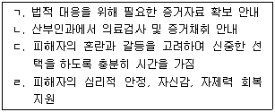
- ㄱ, ㄹ
- ㄴ, ㄹ
- ㄱ, ㄴ, ㄷ
- ㄱ, ㄴ, ㄹ
- ㄱ, ㄴ, ㄷ, ㄹ
(정답률: 알수없음)
56. 코스와 하비(M. Koss, & M. Harvey)의 성폭력피해자 회복단계가 순서대로 나열된 것은?
- 예견 - 충격 - 재구축 - 해결
- 예견 - 재구축 - 충격 - 해결
- 충격 - 예견 - 재구축 - 해결
- 충격 - 재구축 - 예견 - 해결
- 재구축 - 예견 - 충격 - 해결
(정답률: 알수없음)
57. 다음의 예에 해당하는 성역할 정형화 유형은?
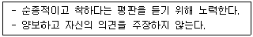
- 성 콤플렉스
- 신데렐라 콤플렉스
- 만능인 콤플렉스
- 수퍼우먼 콤플렉스
- 착한여자 콤플렉스
(정답률: 알수없음)
58. 성폭력 피해 청소년의 상담종결 시 고려해야 할 질문이 아닌 것은?
- 성폭력 경험을 떠올릴 때 피해의식 및 부정적 감정이 감소되었는가?
- 성폭력 경험이 현재 생활적응에 미치는 영향이 감소되었는가?
- 가해자를 얼마나 용서했는가?
- 자존감이 향상되었는가?
- 긍정적 자기개념이 향상되었는가?
(정답률: 알수없음)
59. 성희롱에 관한 설명으로 옳지 않은 것은?
- 성적 언행의 수용여부가 고용, 업무, 학업에 이익 또는 불이익의 조건이 될 때 성희롱이 성립된다.
- 가해자의 성희롱 의도보다 피해자가 이를 통해 수치심과 굴욕감을 느꼈다면 성희롱에 해당된다.
- 생물학자들은 남성이 성적, 공격적 동기를 선천적으로 갖고 태어나 성희롱을 한다고 주장한다.
- 성희롱의 법적근거 중 하나는 남녀고용평등과 일ㆍ가정 양립 지원에 관한 법률이다.
- 직장상사로부터 승진을 빌미로 성적 요구를 받은 경우는 환경형 성희롱에 해당된다.
(정답률: 알수없음)
60. 스그로이, 포터와 블릭(S. Sgroi, F. Port, & L. Blick)의 아동성학대의 단계를 순서대로 나열한 것은?
- 성적 상호작용 - 억압 - 비밀 - 폭로 - 접촉
- 성적 상호작용 - 비밀 - 폭로 - 접촉 - 억압
- 접촉 - 억압 - 성적 상호작용 - 비밀 - 폭로
- 접촉 - 성적 상호작용 - 억압 - 비밀 - 폭로
- 접촉 - 성적 상호작용 - 비밀 - 폭로 - 억압
(정답률: 알수없음)
3과목: 약물상담
61. 다음에서 설명하고 있는 선별도구는?
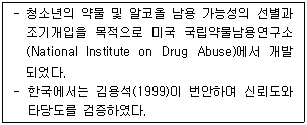
- KAAPI
- AUDIT
- CAGE
- TWEAK
- POSIT
(정답률: 알수없음)
62. 청소년의 약물의존에 관한 설명으로 옳지 않은 것은?
- 성인보다 복합적 약물사용 비율이 높다.
- 성인보다 조장자(enabler)들이 많다.
- 중독과정은 성인과 유사하지만 중독되는 속도는 더 빠르다.
- 성인과 달리 약물사용의 수준을 결정하기 쉽다.
- 성인보다 즐기기 위해 약물을 사용한다.
(정답률: 알수없음)
63. 중추신경흥분제에 관한 설명으로 옳은 것은?
- 쉽게 중독되지 않고 약물사용자의 의지로 사용을 중단할 수 있다.
- 알코올은 중추신경흥분제에 해당된다.
- 암페타민은 중추신경흥분제에 해당된다.
- 벤조디아제핀류는 중추신경흥분제에 해당된다.
- 진정작용을 유발하여 졸리고 나른해진다.
(정답률: 알수없음)
64. 다음에서 설명하고 있는 이론은?
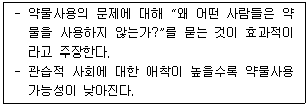
- 인성이론
- 사회통제이론
- 사회학습이론
- 하위문화이론
- 정신분석이론
(정답률: 알수없음)
65. 바버(T. Babor)의 알코올중독 유형 중 B타입 알코올중독자가 갖는 특징이 아닌 것은?
- ADHD, 학습장애와 같은 어린 시절 위험요소가 적다.
- 알코올 사용 문제가 조기에 발생할 가능성이 높다.
- 사회병질, 우울장애와 같은 다른 정신병리가 나타날 가능성이 높다.
- 실직, 이혼, 법적 문제를 비롯하여 알코올로 유발된 문제가 나타날 가능성이 높다.
- 알코올의존 심각성이 크고 만성적인 치료력을 가지고 있을 가능성이 높다.
(정답률: 알수없음)
66. 알코올중독 가정의 성인아이(Adult Child)에 관한 특성이 아닌 것은?
- 처음부터 끝까지 일을 완수하는데 어려움이 있다.
- 권위 있는 사람에게 친밀감을 느낀다.
- 지속적으로 타인의 인정과 확인을 받고 싶어 한다.
- 자신을 평가절하 한다.
- 지나치게 책임감 있거나 지나치게 무책임하다.
(정답률: 알수없음)
67. 청소년 약물남용의 위험요소에 관한 설명으로 옳지 않은 것은?
- 가족력에 우울증 환자가 있어서 정서장애의 성향이 있는 경우
- 스트레스 상황에서 약물을 통해 긴장해소를 한 경험이 있는 경우
- 연예인의 약물사용에 대해 긍정적인 태도를 보이는 경우
- 부모와의 정서적 유대감을 유지하는 경우
- 부모가 약물남용자로서 자녀에게 약물남용의 모델이 되는 경우
(정답률: 알수없음)
68. 행동주의적 집단상담에서 활용하는 기법을 모두 고른 것은?
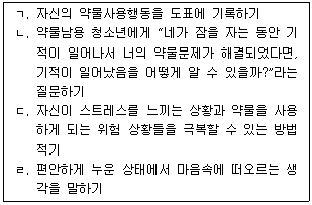
- ㄱ, ㄴ
- ㄱ, ㄷ
- ㄴ, ㄷ
- ㄴ, ㄷ, ㄹ
- ㄱ, ㄴ, ㄷ, ㄹ
(정답률: 알수없음)
69. 정신장애와 약물사용장애를 함께 갖고 있는 내담자의 사정 방법을 모두 고른 것은?
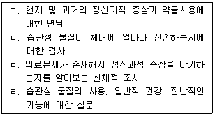
- ㄱ, ㄴ
- ㄱ, ㄷ
- ㄴ, ㄷ
- ㄴ, ㄷ, ㄹ
- ㄱ, ㄴ, ㄷ, ㄹ
(정답률: 알수없음)
70. 약물의 종류에 따른 일반적인 증상으로 옳은 것은?
- 본드 - 술에 취한 듯한 행동이나 헛소리를 한다.
- 대마초 - 체중이 감소된다.
- 필로폰 - 혈압이 낮아진다.
- 수면제 - 불안 및 과민상태에 빠진다.
- 진해제 - 각성상태가 강화된다.
(정답률: 알수없음)
71. 자녀의 약물남용에 대한 부모의 대처 방안을 모두 고른 것은?
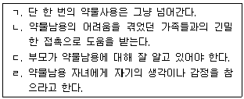
- ㄱ, ㄴ
- ㄱ, ㄷ
- ㄴ, ㄷ
- ㄴ, ㄹ
- ㄷ, ㄹ
(정답률: 알수없음)
72. 밀러(W. Miller)와 산체즈(V. Sanchez)가 제안한 물질남용자를 위한 단기개입에 포함된 요소로 옳지 않은 것은?
- 개인의 위험과 손상에 관한 피드백
- 내담자의 변화를 위한 확실한 조언
- 상담자의 공감 혹은 감정이입
- 변화의 개인적 책임에 대한 강조
- 내담자의 변화 중요성과 자신감
(정답률: 알수없음)
73. 약물남용 청소년의 가족 상담 시 고려해야 할 사항을 모두 고른 것은?
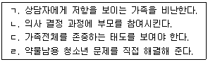
- ㄱ, ㄴ
- ㄱ, ㄷ
- ㄱ, ㄹ
- ㄴ, ㄷ
- ㄴ, ㄹ
(정답률: 알수없음)
74. 알코올사용장애를 측정하는 방법으로 옳은 것은?
- 알코올 소비에 관한 가장 간단한 척도는 ADS이다.
- AUI는 SIP의 228문항을 이용하여 개발된 척도이다.
- HQ는 신경학적 및 신경심리학적 결손들을 찾아내기 위한 척도이다.
- TLFB는 구조화된 면담기법으로 월간 달력과 기억기준점을 사용하여 알코올 소비량을 표집 한다.
- AEQ는 알코올사용자의 변화 준비도를 사정한다.
(정답률: 알수없음)
75. 약물중독 여성청소년의 특성에 관한 설명으로 옳지 않은 것은?
- 남성보다 수분이 많기 때문에 혈중알코올 수준이 낮게 나올 수 있다.
- 약물에 취한 상태에서 성적인 공격을 받거나 강간당할 가능성이 있다.
- 지속적인 약물 사용으로 인한 생리불순, 불임을 초래할 수 있다.
- 생리주기는 병리적인 음주패턴으로 발전하는데 영향을 줄 수 있다.
- 남성에 비해 우울, 낮은 자존감과 같은 심리적인 증상을 더 많이 경험할 수 있다.
(정답률: 알수없음)
76. 동기면담(motivational interviewing)의 기본 원리와 전략의 연결이 옳은 것은?
- 논쟁 피하기 - 변화 초점 바꾸기
- 자기 효능감 지지하기 - 요약하기
- 저항과 함께 구르기 - 공감 표현하기
- 변화대화 이끌어 내기 - 인정하기
- 불일치감 만들기 - 변화 결심 증진하기
(정답률: 알수없음)
77. 청소년 내담자의 흡입제 남용에 관한 설명으로 옳은 것은?
- 흡입제로 인한 숙취는 알코올을 사용했을 때 보다 더 불쾌한 것으로 여겨진다.
- 흡입제는 알코올을 사용했을 때보다 취하는 과정이 더 길다.
- 흡입제는 폐로 흡입되므로 알코올보다 취하는 느낌이 더 느리게 나타난다.
- 뇌전도(EEG)를 통해 측정해 보면 뇌파가 빨라진다.
- 때로 환청, 환시 등의 환각을 경험하여 위험한 행동을 보일 수 있다.
(정답률: 알수없음)
78. 약물에 관한 설명으로 옳은 것을 모두 고른 것은?
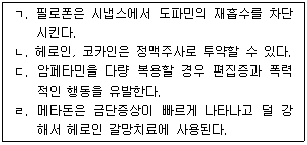
- ㄱ, ㄴ
- ㄴ, ㄷ
- ㄱ, ㄴ, ㄷ
- ㄴ, ㄷ, ㄹ
- ㄱ, ㄴ, ㄷ, ㄹ
(정답률: 알수없음)
79. 중독(addiction)의 증상을 모두 고른 것은?
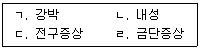
- ㄱ, ㄴ
- ㄴ, ㄹ
- ㄱ, ㄴ, ㄹ
- ㄴ, ㄷ, ㄹ
- ㄱ, ㄴ, ㄷ, ㄹ
(정답률: 알수없음)
80. 다음에서 설명하는 것은?
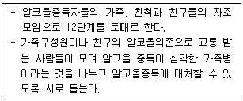
- A.A.
- Al-Anon
- Alateen
- Al-atots
- N.A.
(정답률: 알수없음)
81. 물질 남용의 재발에 관한 설명으로 옳지 않은 것은?
- 재발이 회복 초기에 일어날수록 그 예후가 나쁘다.
- 치료과정에서 발생하는 재발은 하나의 학습 기회가 된다.
- 재발은 실패를 의미하는 것이 아니라 고위험 상황들을 살펴보는 기회가 된다.
- 물질 남용은 진행성 질병이므로 회복 중에도 재발할 수 있다.
- 재발은 방지가 가능할 뿐만 아니라, 회복 중의 많은 사람들이 성공적으로 재발을 방지하고 있다.
(정답률: 알수없음)
82. 다음에서 설명하고 있는 초이론적 모델의 변화단계는?
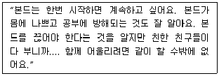
- 숙고전 단계
- 숙고 단계
- 준비 단계
- 행동실천 단계
- 유지 단계
(정답률: 알수없음)
83. 중추신경계에서 부탄가스와 동일하게 작용하는 약물들로 묶인 것은?
- 헤로인, 신나, 카페인
- 알코올, 아편, 코카인
- 필로폰, 니스, 카페인
- 니코틴, 필로폰, 아편
- 모르핀, 아편, 본드
(정답률: 알수없음)
84. 약물 갈망(craving)에 관한 설명으로 옳지 않은 것은?
- 갈망은 회복 과정에서 언제든지 발생할 수 있으며, 자신의 갈망 위험인자들을 잘 파악하고 있어야 한다.
- 일반적으로 경험하는 갈망은 매우 불편한 느낌을 주지만 이는 정상적인 반응이다.
- 갈망은 약물에 대한 생각을 떠올리게 하는 사람과 주변 환경 속에서 유발된다.
- 갈망은 통제할 수 없을 정도로 수분 이내에 최고점에 도달한 후에 계속 지속된다.
- 갈망에 어떻게 대처할 것인가를 학습함에 따라 갈망의 강도와 빈도가 줄어들 수 있다.
(정답률: 알수없음)
85. 청소년 약물상담자가 지녀야 할 태도에 관한 설명으로 옳은 것은?
- 공감은 상담자가 마치 내담자가 된 것처럼 내담자의 심정을 그대로 이해하는 것이다.
- 진실성은 내담자가 자신의 삶을 주체적으로 살 수 있는 힘과 능력이 있는 존재임을 인정하는 것이다.
- 존중은 내담자가 자신의 약물 문제를 부정하거나 거짓말을 할 때 진실과 마주하도록 돕는 것이다.
- 따뜻함은 내담자의 행동 변화를 위하여 상담자 자신의 감정과 경험을 나누는 것이다.
- 자기개방은 상담자가 자신의 외적행동과 내적행동을 일치시켜 밖으로 표현하는 것이다.
(정답률: 알수없음)
86. 다음에서 약물남용의 원인을 설명하는 모델은?
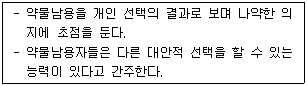
- 도덕모델
- 질병모델
- 생물모델
- 사회학습모델
- 사회문화모델
(정답률: 알수없음)
87. 청소년 약물남용의 정신장애와 관련된 합병증이 아닌 것은?
- 우울장애
- 자살시도
- 불안장애
- 망상장애
- 면역장애
(정답률: 알수없음)
88. 다음에서 설명하는 인지행동치료 기법은?
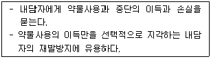
- 분산기법 활용하기
- 미래 예상하기
- 과거 회상하기
- 결정저울 사용하기
- 점진적 과제수행하기
(정답률: 알수없음)
89. 폭력, 절도 등의 비행행동을 보이고 지속적으로 알코올과 본드를 사용하는 청소년에게 '청소년용 다면적 인성검사(MMPI-A)'를 실시하였다. 이 청소년의 비행행동과 물질사용행동을 반영해 주는 척도는?
- Si
- Hs
- Pd
- Mf
- Pt
(정답률: 알수없음)
90. 청소년의 약물남용 경고 징후로 옳지 않은 것은?
- 성적이 점차 떨어지는 등 학업이 부진해진다.
- 수업을 쉽게 빠지거나 무단결석이 잦다.
- 부모님과 선생님에게 만성적으로 거짓말한다.
- 새롭고 다양한 친구들을 사귄다.
- 적대적이거나 충동적인 감정 표출의 빈도가 증가한다.
(정답률: 알수없음)
4과목: 위기상담
91. 다음에서 설명하고 있는 위기이론은?
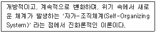
- 정신분석이론
- 혼돈이론
- 적응이론
- 대인이론
- 체계이론
(정답률: 알수없음)
92. 위기의 특성에 관한 설명으로 옳지 않은 것은?
- 위험과 기회가 공존한다.
- 복잡한 증상을 보인다.
- 만병통치나 빠른 해결책은 없다.
- 성장과 변화의 씨앗이 된다.
- 위기에 처한 사람에게 선택은 중요하지 않다.
(정답률: 알수없음)
93. DSM-5에 분류된 외상 및 스트레스 사건 관련 장애(Trauma- and Stressor-Related Disorders)의 하위 장애에 해당되지 않는 것은?
- 적응 장애
- 탈억제 사회관여 장애
- 반응성 애착 장애
- 급성 스트레스 장애
- 사회불안장애
(정답률: 알수없음)
94. 외상후 스트레스 장애에 효과적인 치료법으로 옳은 것을 모두 고른 것은?
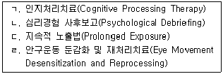
- ㄱ, ㄴ
- ㄴ, ㄷ
- ㄱ, ㄴ, ㄷ
- ㄱ, ㄷ, ㄹ
- ㄴ, ㄷ, ㄹ
(정답률: 알수없음)
95. 급성 스트레스 장애에 관한 설명으로 옳지 않은 것은?
- 이 장애를 가진 사람들은 다른 증상들과 더불어 해리증상을 경험할 수 있다.
- 유병률은 외상 사건의 종류와 상관없다.
- 여성이 남성보다 급성 스트레스 장애에 취약하다.
- 외상 사건이라는 분명한 촉발요인에 의해 발생한다.
- 방치하면 증상이 악화되면서 더 심각한 외상후 스트레스 장애로 발전할 수 있다.
(정답률: 알수없음)
96. 체계위기개입에 관한 설명으로 옳은 것은?
- 퇴행을 저지하고 지지를 제공하는데 목표를 둔다.
- 전통적 사정과 진단적 기술을 중시한다.
- 위기를 결정하는 주요 자극의 유형을 사정한다.
- 기본적 가정은 자아기능에 관한 정신분석학적 이론에 기초한다.
- 개인 및 위기 자극이 존재하고 있는 사회적 맥락을 강조한다.
(정답률: 알수없음)
97. 위기상담의 원리에 관한 설명으로 옳지 않은 것은?
- 시간제한적인 본질을 내포하고 있으므로 즉각적인 개입을 필요로 한다.
- 위기상담의 기술은 적극적인 성격을 띠고 있으며, 행동에 초점을 둔다.
- 위기 과정을 유발시킨 '문제'를 해결하는 데 초점을 두어야 한다.
- 신속하게 내담자의 사회관계망을 넓히고 강화하도록 노력해야 한다.
- 내담자 자신이 할 수 있는 것도 가능하면 상담자와 함께 참여할 기회를 제공한다.
(정답률: 알수없음)
98. 라이트너(L. Leitner)와 벨킨(G. Belkin)의 기본적 위기개입 모델을 모두 고른 것은?
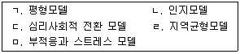
- ㄱ, ㄷ
- ㄱ, ㄹ
- ㄱ, ㄴ, ㄷ
- ㄴ, ㄷ, ㄹ
- ㄴ, ㄷ, ㅁ
(정답률: 알수없음)
99. 위기개입 전문가의 행동전략으로 옳지 않은 것은?
- 내담자의 안전에 의심이 생기면 관련전문가의 도움을 구해야 한다.
- 내담자의 강점과 대처기제를 고려하는 것이 중요하다.
- 위기를 우연히 외부에서 일어난 상황 또는 사건으로 본다.
- 각각의 내담자와 위기를 독특한 것으로 보고 반응한다.
- 내담자의 즉각적인 욕구에 주목해야 한다.
(정답률: 알수없음)
100. 트라우마 체계치료(Trauma Systems Therapy)에서 치료 단계를 순서대로 나열한 것은?
- 생존 - 유지 - 안정 - 극복 - 이해
- 생존 - 유지 - 안정 - 이해 - 극복
- 생존 - 안정 - 유지 - 이해 - 극복
- 안정 - 유지 - 생존 - 극복 - 이해
- 안정 - 이해 - 생존 - 극복 - 유지
(정답률: 알수없음)
101. 위기에 대처하지 못하는 사람들이 보이는 특징으로 옳지 않은 것은?
- 현실을 부정하는 사람은 위기를 대처해 나가는데 어려움이 많다.
- 육체적인 문제나 질병을 가진 사람은 위기 상황에서 효율적인 대처를 하기 어렵다.
- 시간에 대한 비현실적인 접근으로 문제가 즉시 해결되기를 바라면서 서두르거나 미룬다.
- 위기를 수용하고 우선순위를 정해 인지적인 대처를 하려고 노력한다.
- 지나친 죄책감에 사로잡혀 있는 사람은 위기를 다루는데 어려움을 겪는다.
(정답률: 알수없음)
102. 위기개입 담당자나 상담자의 소진에 관한 설명으로 옳지 않은 것은?
- 소진은 사건 지향적이기보다 과정 지향적이다.
- 소진은 DSM-5의 불안장애에 포함되었다.
- 어떤 경우는 증상이 빨리 나타나지만 대부분은 천천히 나타난다.
- 소진은 자신뿐만 아니라 타인들에게도 영향을 줄 수 있다.
- 직장에서의 자율성과 사회적 지지는 소진을 예방하고 조절하는데 매우 중요하다.
(정답률: 알수없음)
103. 단기상담과 위기개입에 관한 설명으로 옳은 것은?
- 단기상담의 목표는 성격의 재구조화이다.
- 위기개입의 목표는 구체적인 증상을 제거하는 것이다.
- 위기개입에서 치료의 초점은 현재상황과 관련된 과거이다.
- 상담자는 단기상담보다 위기개입에서 더 적극적인 역할을 한다.
- 단기상담과 위기개입에서 내담자들이 보이는 징후는 유사하다.
(정답률: 알수없음)
104. 재난 위기를 겪고 있는 청소년의 특징으로 옳은 것은?
- 집중장애와 무력감이 나타난다.
- 신체 활동이 뚜렷하게 상승한다.
- 아동보다 신체적 증상을 많이 호소한다.
- 부모 또는 학교의 권위에 순응한다.
- 사회적 활동에 대한 흥미가 증가한다.
(정답률: 알수없음)
1⑤. 외상후 스트레스 장애에 관한 설명으로 옳지 않은 것은?
- 사건과 관련하여 반복적으로 떠오르는 생각이나 악몽에 시달린다.
- 외상적 사건을 상기시키는 활동을 피하고 그와 관련된 사고, 느낌 혹은 대화를 피한다.
- 고립감을 느끼거나 한때 좋아했던 활동에 대한 관심을 잃는다.
- 급성 스트레스 장애와 외상후 스트레스 장애를 구분하는 기준은 외상의 종류이다.
- 스트레스 장애를 가진 사람들은 쉽게 놀라며, 주의집중에 어려움을 보인다.
(정답률: 알수없음)
106. 자살 가능성이 있는 청소년 내담자에 관한 개입으로 옳지 않은 것은?
- 자살위험 수준을 평가한다.
- 최근 구체적으로 자살계획을 세운 적이 있는지 묻는다.
- 자살과 관련한 생각과 감정을 표현할 수 있도록 한다.
- 내담자가 위기상황에서 사용 가능한 대안을 찾아보도록 돕는다.
- 자살하면 안 되는 이유에 대한 상담자의 가치관을 강요한다.
(정답률: 알수없음)
107. 학교폭력예방 및 대책에 관한 법률의 내용으로 옳은 것을 모두 고른 것은?
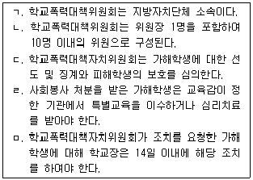
- ㄱ, ㄴ
- ㄴ, ㄹ, ㅁ
- ㄷ, ㄹ, ㅁ
- ㄱ, ㄴ, ㄷ, ㄹ
- ㄱ, ㄴ, ㄷ, ㅁ
(정답률: 알수없음)
108. 다음의 현상을 설명한 것은?
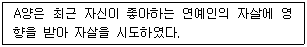
- 호손 효과
- 나비 효과
- 초두 효과
- 후광 효과
- 베르테르 효과
(정답률: 알수없음)
109. 학교폭력 가해 및 피해학생에 대한 상담 개입으로 옳지 않은 것은?
- 가해학생의 경우에는 심리적 안정감과 문제해결능력 향상에 초점을 둔다.
- 피해학생의 경우에는 가해학생의 입장을 이해하도록 돕는다.
- 피해학생의 경우에는 피해의 내용을 구체적으로 확인한다.
- 피해학생의 경우에는 상담 초기에 가해학생의 보복에 대한 두려움을 공감한다.
- 가해학생과 피해학생 모두에게 자신의 욕구를 알아차리고 적절히 표현할 수 있도록 돕는 것이 상담 목표가 될 수 있다.
(정답률: 알수없음)
110. ( )안에 알맞은 것으로 묶인 것은?
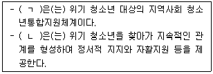
- ㄱ: CYS-Net, ㄴ: 청소년동반자
- ㄱ: CYS-Net, ㄴ: 1388 청소년지원단
- ㄱ: Wee Project, ㄴ: 청소년동반자
- ㄱ: Wee Project, ㄴ: 1388 청소년지원단
- ㄱ: CYS-Net, ㄴ: 1388 청소년헬프콜
(정답률: 알수없음)
111. 학교폭력에 영향을 주는 부모의 양육태도에 관한 설명으로 옳은 것은?
- 부모의 방임적 양육태도는 학교폭력과 관련이 없다.
- 부모의 개방적 의사소통은 자녀의 폭력행동과 정적인 상관이 있다.
- 부모의 일관적 양육태도는 자녀로 하여금 행동 규제를 학습하지 못하도록 하여 공격행동을 지속시킨다.
- 자녀의 폭력적인 행동에 대한 부모의 허용적인 반응은 자녀의 공격성을 강화한다.
- 부모의 수용적 태도와 자녀의 도덕성 발달은 관련이 없다.
(정답률: 알수없음)
112. 청소년 인터넷 중독에 관한 설명으로 옳지 않은 것은?
- 사회적으로 고립되고 위축된 청소년일수록 인터넷 중독에 빠질 가능성이 높다.
- 인터넷 중독 위험군 발굴을 위해 매년 초등 4년, 중등 1년, 고등 1년을 대상으로 전수조사를 실시한다.
- S-척도는 한국형 인터넷게임 중독 자가진단 척도이다.
- 16세 미만 청소년들은 자정부터 새벽 6시까지 온라인게임을 하지 못한다.
- 'RESCUE스쿨'은 인터넷 중독 청소년을 대상으로 운영된다.
(정답률: 알수없음)
113. 학교 내 자살에 대한 학교의 사후개입으로 적절하지 않은 것은?
- 위기개입팀을 구성하여 소집한다.
- 애도를 위해 매년 기념일을 정해 추모한다.
- 모방 자살 예방을 위해 위험 학생들의 행동을 주의 깊게 관찰한다.
- 학생들을 대상으로 사후개입 프로그램을 실시한다.
- 사후개입 과정을 기록하여 관리한다.
(정답률: 알수없음)
114. 다음 중 청소년의 자살 행동을 높이는 요인이 아닌 것은?
- 높은 문제해결 능력
- 물질 남용
- 이분법적 사고
- 학교생활의 부적응
- 가족 구성원 간 갈등
(정답률: 알수없음)
115. 다음에서 설명하고 있는 자살이론 모델은?
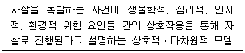
- 큐빅 모델
- 3요인 모델
- 중첩 모델
- 수레바퀴 모델
- 자살궤도 모델
(정답률: 알수없음)
116. 스톤(H. Stone)의 위기 발전 단계로 옳은 것은?
- 유발 사건 - 위기 평가 - 대처 - 위기
- 유발 사건 - 혼란 - 대처 - 위기
- 유발 사건 - 대처 - 혼란 - 새로운 대처
- 유발 사건 - 대처 - 위기 평가 - 새로운 대처
- 유발 사건 - 대처 - 위기 평가 - 위기
(정답률: 알수없음)
117. 길리랜드(B. Gilliland)의 위기개입 모델의 순서로 옳은 것은?
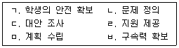
- ㄱ - ㄴ - ㄷ - ㄹ - ㅁ - ㅂ
- ㄱ - ㄴ - ㄹ - ㅁ - ㄷ - ㅂ
- ㄴ - ㄱ - ㄷ - ㄹ - ㅂ - ㅁ
- ㄴ - ㄱ - ㄹ - ㄷ - ㅁ - ㅂ
- ㄴ - ㄱ - ㄹ - ㄷ - ㅂ - ㅁ
(정답률: 알수없음)
118. 상담자가 이혼 부모를 상담할 때 제시하는 지침으로 옳지 않은 것은?
- 이혼의 원인이 자녀에게 있지 않음을 설명한다.
- 이혼 후 헤어지는 부나 모와 정기적으로 만날 수 있음을 얘기해 준다.
- 이혼에 대한 자녀의 불안과 슬픔을 이해하도록 노력한다.
- 이혼 후 부모 관계가 좋아지면 다시 함께 살게 될 수도 있음을 얘기해 준다.
- 이혼으로 인한 가족 구조 변화에 대해 알려준다.
(정답률: 알수없음)
119. 다음에서 설명하고 있는 위기 유형은?
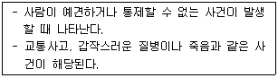
- 상황적 위기
- 발달적 위기
- 실존적 위기
- 환경적 위기
- 사회 문화적 위기
(정답률: 알수없음)
120. 부모의 이혼에 대한 청소년의 반응으로 옳지 않은 것은?
- 자신의 분노 감정을 헤어진 부모에게 투사하여 부모가 자신을 미워한다고 느낀다.
- 부모의 이혼에 대한 설명에도 함께 살지 않는 부모가 되돌아올 것이라고 믿는다.
- 부모의 긍정적 의사소통 방식을 통해 인간관계에 자신감을 느낀다.
- 자신이 거부당했다고 생각하여 우울감에 빠진다.
- 부모가 자기 때문에 이혼했다는 생각으로 죄책감에 빠진다.
(정답률: 알수없음)